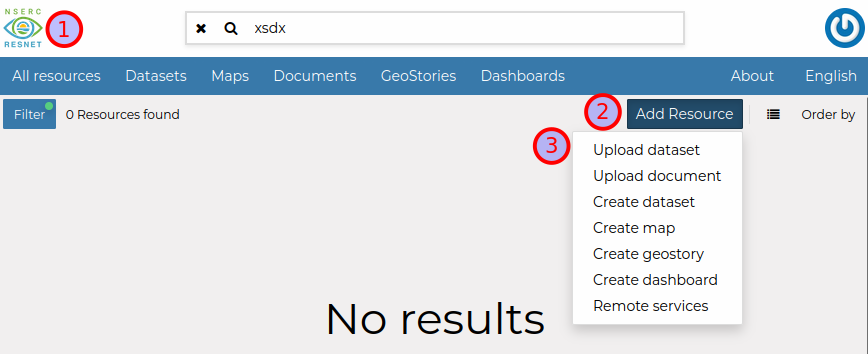

ResNet Data Portal User Guide
Chapter 1 Quick Start
This guide will walk you through the steps of documenting your research project using the Metadata Questionnaire, uploading that document to the ResNet Data Portal, and submitting data layers and documents to the Data Portal.
For a more in-depth look at the Data Portal’s features, please see the Full User Guide.
1.1 Register for the Data Portal

Figure 1.1: Register an account
Navigate to the ResNet Data Portal and click
Registerto create an account (orSign inif you already have one).Enter an email where you’d like to be contacted, a username such as
firstname_lastname, and a strong password. Save this password somewhere safe.

Figure 1.2: Edit user profile
- Click menu on the top right and then
Profile. ClickEdit profileand include your name and institution.
1.2 Write Project Metadata
Navigate to the Metadata Questionnaire.
Carefully read the instructions included on that page.
Complete all relevant sections of the form to the best of your ability.
Remember to save your work! The questionnaire will create a PDF file. You need to save this to your computer and then upload it to the Data Portal.
You can also upload this file back into the Metadata Questionnaire if you need to make changes.
1.3 Upload Project Metadata to Data Portal

Figure 1.3: Upload document
- From the Data Portal landing page, click
Add Resource -> Upload Document.

Figure 1.4: Upload document
Click
Select Filesand choose the PDF file you saved from the Metadata Questionnaire in the previous step.Click
Uploadand once completed, clickView.

Figure 1.5: Edit metadata
- You can now see your document, but we need to make it easier for others to find by adding some basic metadata. Click
Edit -> Edit Metadata

Figure 1.6: Document metadata part 1

Figure 1.7: Document metadata part 2

Figure 1.8: Document metadata part 3
Fill in basic information, click
Nextto proceed through pages of the wizard, and clickUpdateto save your changes.While not everything may be applicable, there are several important fields all uploads should include:
Title: Replace the filename with a concise, descriptive title (eg ‘Wave Dissipation Potential of Spartina alterniflora in the Bay of Fundy’).
Abstract: Copy over the abstract from your Project Metadata document.
Group: Your ResNet Landscape or Theme. Please note, you may need to be invited to a group before you can assign any uploads to it.
Free-text Keywords: A free form space to associate descriptive keywords with your data. Multiple keywords can be added. Use your best judgement to assign terms that will help users discover data relevant to their interests.
Attribution: Include additional authors and primary contributors.
Other constraints: Any restrictions on publishing or sharing this data. Copy over from your Project Metadata PDF as needed.
1.4 Upload Data Layers and Documents to Data Portal
Now that you’ve uploaded your Project Description, it’s time to add data and documents related to your project.
For spatial data, click
Add Resource -> Upload dataset. Supported formats include ESRI shapefile, GeoJSON, and GeoTIFF. Note, files larger than 150 mb may fail to upload. Contact the Data Manager for assistance with getting these files onto the portal.For non-spatial data, qualitative data, and supporting documents, click
Add Resource -> Upload document. These can include documents, spreadsheets, multimedia, and zipped archives.Once an item has finished uploading, view the resource and click
Edit -> Edit Metadata. Complete the form like you did for the the project description in the previous section. Make sure to add your Project Metadata underRelated resources. This will create link between your project and any associated items.
Title: Replace the filename with a concise, descriptive title (eg ‘Wave Dissipation Potential of Spartina alterniflora in the Bay of Fundy’).
Abstract: Copy over the relevant
Data Descriptionfield from your Project Metadata document. It should be specific to the dataset, rather than for the overall project.Group: Your ResNet Landscape or Theme. Please note, you may need to be invited to a group before you can assign any uploads to it.
Free-text Keywords: A free form space to associate descriptive keywords with your data. Multiple keywords can be added. Use your best judgement to assign terms that will help users discover data relevant to their interests.
Attribution: Include additional authors and primary contributors.
Other constraints: Any restrictions on publishing or sharing this data. Copy over from your Project Metadata PDF as needed.
Related resources: Select your Project Description. This will create a collection of resources associated with your project!
1.5 Finalize and Publish
Initially, your data and documents will only be visible to you (and the Data Portal administrators).
After you’ve completed the previous steps, send an email to the Data Manager:
to:
resnet.data.portal@gmail.com
subject:Your landscape/theme: your project title
body:List of resources ready for review
We’ll review the submission together, request changes if needed, and finalize your submission.
Once the submission is finalized, and if there are no restrictions due to data sensitivity or publication embargo, the layer will be made visible to the public.

Figure 1.9: Data publication workflow